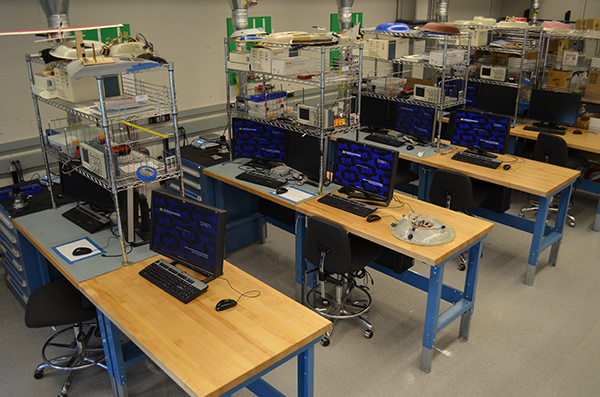

Rooms of computers provided access to workstations, desktop computers and printers.
Usage was primarily drop-in and some instructional usage.
Today, even though students have their own personal computing devices, demand for student computing has moved to more specialized computing environments. For example access to more capable design-oriented computers, facility collaboration and innovative instructional space. We now consider computing labs as a component of a more formal facilities family that we refer to as Instructional and Learning Environments.
Facilities and technology that are planned and operated together which address common requirements, namely to provide for instruction, project collaboration, and engineering design.
There are several different types of facilities with technology that we associate with ILE:
Student computing labs are now more specialized and have several variations that address different computing requirements. The current student computing facility types were developed over time as a result of discussions with students groups and faculty, analyzing lab and software usage data, adapting to licensing changes in the software industry, and observing trends in other institutions.
These facilities are integrated with computing and A/V technology and are designed primarily for classroom instruction. They have the following features:
[Add another photo here]
These facilities are integrated with computing and A/V technology and are designed primarily for student group collaboration activities (i.e., course assignments, co-curricular projects). They have the following features:
[REPLACE THIS PHOTO]
These facilities are integrated with advanced computing technology and are designed for completing large design engineering course assignments. They have the following features:

These facilities are integrated with computing and specialized technology and are designed for completing lab assignments in a specific academic department. They have the following features:
A virtualized desktop infrastructure for student computing labs designed to be accessed either off premises or off campus, and for displaying on a personally owned computing device.
The current classroom facility types were developed over time as a result of discussions with faculty as well as adopting new technology and furniture designs.
[NEED PHOTO HERE]
These centrally-scheduled College classrooms are designed for self-service. The following are standard features in all classrooms (note that there are some differences in the standard features depending on whether the classroom is classified as Small, Medium, or Large):
The following are optional features:
[NOTE: THIS PHOTO IS BEING REPLACED]
These facilities contain the standard features of traditional digital classrooms. In addition, they contain reconfigurable active-learning space including robust technology supporting collaborative online and interactive learning. Reconfiguration can be accomplished with minimal effort and will allow for project work, student team collaboration, discussions, in-class interaction, and traditional lecture format.
These facilities offer a flexible learning environment for providing academic support. These facilities feature collaborative furniture intended to support supplemental instruction, peer tutoring, and computer assisted learning. Built-in computers feature large monitors and the same environment as found in the student computing labs.
These facilities offer unique collaborative and casual furniture to attract impromptu project or course work. Other features may include device charging sources, writing surfaces, and A/V. Areas designated for this purpose are typically alcoves, atriums, foyers, and hallways. Furniture can easily be reoriented or reconfigured according to individual needs.